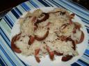

I wouldn't call me a great cooker, but I like to cook once in a while. After all it's a creative activity, and I enjoy creating stuff.
So, this evening I came up with a funny variation on the classical sausages + rice meal (as I told you, I am not a great cooker). I believe this recipe is totally geek and student friendly.
For two plates, you need:
Pour the cup of rice and two cups of water in a casserole with a pinch of coarse salt. Put on medium heat.
While the rice is cooking, cut the sausages lengthwise, then in two. Each sausage should give you four half cylinders. Now cut each half cylinder in three parts lengthwise to produce thin chips-like shapes.
Put the cut sausages in a frying pan on high heat, stir regularly to make sure all parts are evenly fried. As you do so, you will notice the fun part: the sausages will start to curl, to the point where they look like a half-circle. After one or two minutes, reduce the fire to medium heat.
When the rice has absorbed all the water, poor it in the pan, and mix with the sausages for a while.
You are done! it should look like this:

PS: It's the first time I write a recipe in english, please ask if something is unclear, and notify me of vocabulary errors.{kind=link}